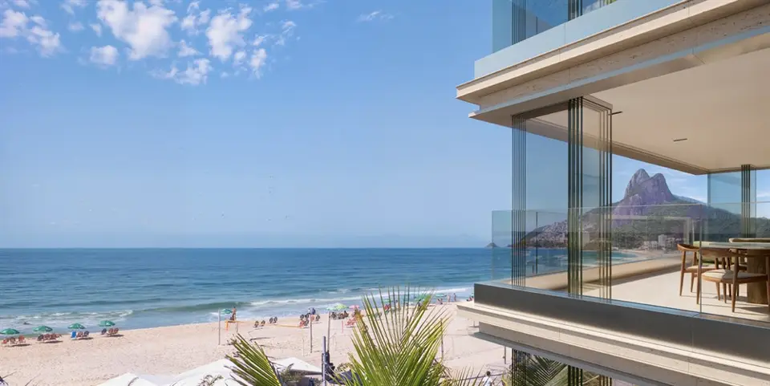

Imagens


Galeria
Imagens ilustrativas, de caráter artístico, conforme material da incorporadora.

Apartamentos luxuosos de 4 suítes no Leblon
O Mar Delfim Moreira é um empreendimento impecável e exclusivo, estrategicamente localizado na prestigiada Avenida Delfim Moreira, 120, com vista direta para a praia do Leblon, um dos cartões-postais mais desejados do Rio de Janeiro. Assim, este projeto de altíssimo padrão não apenas redefine o conceito de elegância, mas também oferece o privilégio de viver em um dos bairros mais nobres e vibrantes da cidade.
Ademais, o Mar Delfim Moreira foi cuidadosamente planejado para atender aos mais altos padrões de conforto e exclusividade. Com unidades amplas e sofisticadas de 333 m², os apartamentos dispõem de 4 suítes, perfeitas para famílias que buscam privacidade e sofisticação. Cada residência foi projetada com atenção a todos os detalhes, incluindo acabamentos de altíssimo padrão, integração harmoniosa entre os ambientes internos e a deslumbrante vista para o mar. Somando-se a isso, as unidades oferecem vagas de garagem, garantindo total comodidade aos moradores.
Além do design impecável, o Mar Delfim Moreira destaca-se por sua localização privilegiada, que garante proximidade com tudo que o Leblon tem de melhor a oferecer. O bairro combina, portanto, charme e sofisticação com uma infraestrutura completa, incluindo colégios renomados, restaurantes de alta gastronomia, supermercados gourmets e hospitais de excelência, oferecendo praticidade para o dia a dia. Por outro lado, sua localização permite momentos de lazer únicos, com fácil acesso ao Jardim de Alah, à Lagoa Rodrigo de Freitas e ao Shopping Leblon. Assim, morar neste empreendimento é vivenciar o equilíbrio perfeito entre natureza, comodidade e sofisticação.
Por fim, o Mar Delfim Moreira não apenas entrega conforto, mas também oferece exclusividade em cada detalhe. Seja pelas amplas suítes, pelas áreas bem planejadas ou pela integração com a paisagem da orla, este projeto incorpora luxo em sua essência. A exclusividade de um empreendimento com poucas unidades e um design cuidadosamente planejado eleva este lançamento ao mais alto padrão de moradia no Rio de Janeiro, destacando-se como referência para o mercado imobiliário de alto luxo.
Assim, invista em um estilo de vida único, onde sofisticação e qualidade se encontram. O Mar Delfim Moreira é o endereço ideal para quem deseja viver a combinação perfeita de luxo e exclusividade à beira-mar.
Metragens, tipologias e disponibilidade conforme material oficial da incorporadora, sujeitos a alteração sem aviso. Valores e condições confirmados na tabela vigente. Seleção e atendimento: Paulo Cotrim, CRECI-RJ 77677-F.
Imagens ilustrativas, de caráter artístico, conforme material da incorporadora.